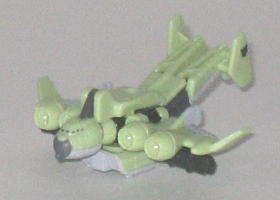
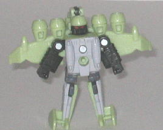
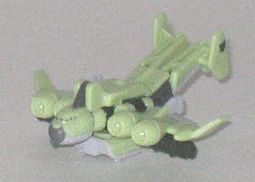
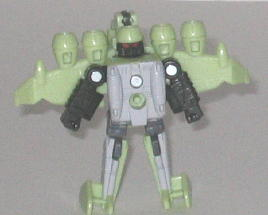
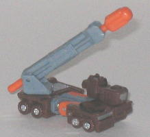
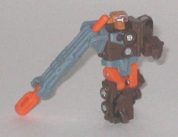

Sky
Lynx
Sky
Lynx
 
Allegiance : Decepticon, Minicon
Difficulty of Transformation : Very Easy
Color Scheme : Light gray, pastel green, charcoal black, and some red and dark gray
Individual Rating : 5.0
Sky
Lynx vs. Thunderblast
Size
: Mini-Con (2-pack)
Overall Rating:
5.8
 Sky
Lynx
Sky
Lynx


Allegiance
: Decepticon, Minicon
Difficulty of Transformation
: Very
Easy
Color Scheme
: Light gray, pastel
green, charcoal black, and some red and dark gray
Individual Rating
: 5.0
(NOTE: Because this toy is a repaint, this is not a full-blown review. This mainly covers any changes made to the toy and the color scheme, and merely compares it to Armada Gunbarrel. For a review on the mold itself, read the review of Armada Gunbarrel here .)
...A pastel green airplane.
A PASTEL GREEN AIRPLANE. Seriously... what? Who in their right mind would
color an airplane pastel green? Yes, this is the shortest review I've ever
given to a toy, because a pastel green airplane pretty much speaks for
itself. Ick.
No mold changes have
been made to the Minicon who insists on living in the '70s, though he does
have a new black Decepticon symbol on his left tail wing.
 Thunderblast
Thunderblast


Allegiance
: Autobot, Minicon
Difficulty of Transformation
: Easy
Color Scheme
: Brown, dull bluish
gray, orange, and some silver, black, red, and dull orange
Individual Rating
: 6.9
(NOTE: Because this toy is a repaint, this is not a full-blown review. This mainly covers any changes made to the toy and the color scheme, and merely compares it to Armada Bonecrusher. For a review on the mold itself, read the review of Armada Bonecrusher here .)
Nope, Thunderblast isn't
a
Decepticon boat
-- you're thinking of
the deluxe-sized toy, who inexplicably shares the name of a completely
different Minicon in the same line for some weird reason. Anyways, THIS
Thunderblast's color scheme is fairly good-- the brown is a very suitable
color for a "down 'n dirty" military vehicle, and the new black camo stripes
on the toy help to enhance the military-ness of it. The orange, silver
and gray are also great secondary colors-- they fit in pretty well with
the brown, but also make for a pretty original color scheme.
No mold changes have
been made to Thunderblast-- he does have a new painted Autobot symbol on
the back end of his vehicle mode, however.
Sky Lynx vs. Thunderblast
is a mixed bag. Thunderblast has a pretty good color scheme (even though
I think Armada Bonecrusher's is ever-so-slightly better) and is one of
the better Minicon molds, but Sky Lynx is a fairly bad mold and in an AWFUL
color scheme. Overall, you're probably better off getting the original
Armada Land Military and Air Military teams instead of these guys.
Review by Beastbot